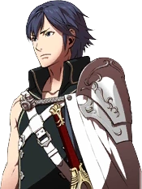
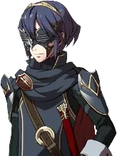
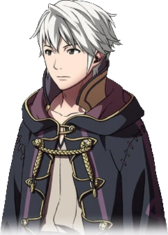
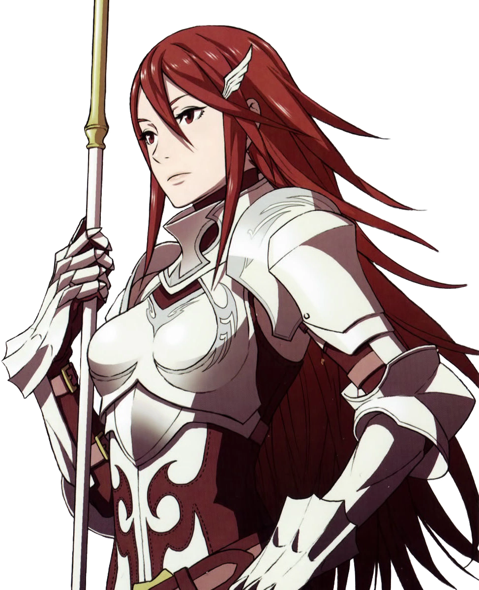

Character Overview
Explore the people of Ylisse
Notable Cast
Chrom

Prince of Ylisse Chrom is the main protagonist. He is the prince of Ylisse, and the brother of Lissa. He is also the father of Lucina. Chrom wields the legendary Falchion as his main weapon.
Marth

Future Guardian Lucina is the tritagonist. She is the future daughter of Chrom. Early on in Awakening, she appears as a masked swordsman under the alias of Marth.
Robin

Tactician Robin is the deuteragonist. As an Avatar, their name and appearance are customizable by the player.
Lissa
Born to the Ylissean royal family, Lissa is the youngest of the three siblings,and the princess of Ylisse.
Cordelia

Cordelia is a member of Ylisse's Pegasus Knights and a childhood friend of Sumia.
Sumia
 Sumia is a Pegasus Knight of Ylisse known for her exceptional foresight and devotion to her friends.
Sumia is a Pegasus Knight of Ylisse known for her exceptional foresight and devotion to her friends.
Sumia is a Pegasus Knight of Ylisse known for her exceptional foresight and devotion to her friends.
Olivia
 Olivia is a traveling dancer whose grace inspires allies on and off the battlefield.
Olivia is a traveling dancer whose grace inspires allies on and off the battlefield.
Olivia is a traveling dancer whose grace inspires allies on and off the battlefield.
Maribelle
 Maribelle is a noble from Ylisse and Lissa's close friend.
Maribelle is a noble from Ylisse and Lissa's close friend.
Maribelle is a noble from Ylisse and Lissa's close friend.
Frederick
 Frederick is Chrom's loyal friend, and a Great Knight of Ylisse.
Frederick is Chrom's loyal friend, and a Great Knight of Ylisse.
Frederick is Chrom's loyal friend, and a Great Knight of Ylisse.
Miriel
 Miriel is a scholarly Mage who approaches every mystery with careful research.
Miriel is a scholarly Mage who approaches every mystery with careful research.
Miriel is a scholarly Mage who approaches every mystery with careful research.
Sully
 Sully is a fearless Knight and one of Chrom's most trusted allies.
Sully is a fearless Knight and one of Chrom's most trusted allies.
Sully is a fearless Knight and one of Chrom's most trusted allies.
Cherche
 Cherche is a Wyvern Rider who serves House Virion.
Cherche is a Wyvern Rider who serves House Virion.
Cherche is a Wyvern Rider who serves House Virion.
Panne
 Panne is the last surviving member of her tribe and a powerful shapeshifter.
Panne is the last surviving member of her tribe and a powerful shapeshifter.
Panne is the last surviving member of her tribe and a powerful shapeshifter.
Walhart
 Walhart is the Conqueror, a formidable Great Knight who seeks to unite the continent by force.
Walhart is the Conqueror, a formidable Great Knight who seeks to unite the continent by force.
Walhart is the Conqueror, a formidable Great Knight who seeks to unite the continent by force.
Tharja
 Tharja is a Dark Mage whose intimidating demeanor hides a fiercely loyal heart.
Tharja is a Dark Mage whose intimidating demeanor hides a fiercely loyal heart.
Tharja is a Dark Mage whose intimidating demeanor hides a fiercely loyal heart.
Nowi
 Nowi is an ancient Manakete who can transform into a powerful dragon.
Nowi is an ancient Manakete who can transform into a powerful dragon.
Nowi is an ancient Manakete who can transform into a powerful dragon.